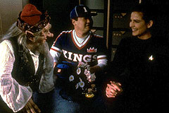

MANCHETE
DO EPISDIO
Personagens
pitorescos em histria sem
sentido, recheada com tecnobaboseira
Episdio
anterior | Prximo
episdio
Sinopse:
Data Estelar: 46853.2.

Surgem
em Deep Space Nine trs seres oriundos da
imaginao dos tripulantes. Ao final, eles se revelam como
aliengenas com intenes e motivaes desconhecidas.
Os trs aparecem como Buck Bokai, um jogador de beisebol do
sculo 21 que segue Jake desde a Holosute at seus aposentos;
Rumpelstiltskin, um pequeno duende que aterroriza o chefe O'Brien;
e uma verso de Jadzia idealizada por Julian, convenientemente
burra e totalmente
enlouquecida de amores por ele.
Durante este perodo, surge uma anomalia espacial que ameaa
destruir todo o sistema Bajoriano. Porm, mais rpido que
algum possa dizer "Spectre Of The Gun", Sisko entende
que a anomalia tambm fruto da imaginao da tripulao,
fornecendo um meio de contornar o perigo.
Comentrios:
"If Wishes Were Horses" uma desculpa
para levar personagens mticos e pitorescos a bordo de Deep
Space Nine. Na verdade, tudo no passa de uma tentativa
de falar mais sobre os prprios tripulantes da estao.
Para O'Brien, um mstico duende, certamente oriundo das antigas
lendas e tradies da Bretanha. Para Bashir, uma Jadzia Dax
submissa, seguramente a maior fantasia do jovem doutor.
Finalmente, Buck Bokai demonstra toda a paixo de Sisko pelo
beisebol.
Infelizmente, o enredo um preo muito alto a se pagar por
informaes to pouco interessantes e sem consequncias sobre
a tripulao. E Odo correndo atrs de uma ema no o que se
pode chamar de roteiro inteligente.
Para resumir a pera, tudo no passa de um verdadeiro exerccio
em inutilidade.
A quantidade excessiva de "tecnobaboseira" chega a dar
tontura ou acessos de riso - o que acontecer primeiro!
Citaes:
Jake - "He followed me
home from the holosuite."
("Ele me seguiu at em casa vindo da holosute.")
Trivia:
 Episdio contou com participao de Keiko e Molly O'Brien.
Episdio contou com participao de Keiko e Molly O'Brien.
Ficha
tcnica:
Histria de Nell McCue
Crawford & William L. Crawford
Roteiro de Nell McCue Crawford & William L. Crawford e
Michael Piller
Direo de Robert Legato
Exibido em 17/05/1993
Produo: 016
Elenco:
Avery Brooks como
Benjamin Lafayette Sisko
Ren Auberjonois como Odo
Nana Visitor como Kira Nerys
Colm Meaney como Miles Edward O'Brien
Siddig El Fadil como Julian Subatoi Bashir
Armin Shimerman como Quark
Terry Farrell como Jadzia Dax
Cirroc Lofton como Jake Sisko
Elenco convidado:
Rosalind Chao como Keiko O'Brien
Keone Young como Harlon Gin "Buck"
Bokai
Michael John Anderson como Rumpelstiltskin
Hana Hatae como Molly O'Brien